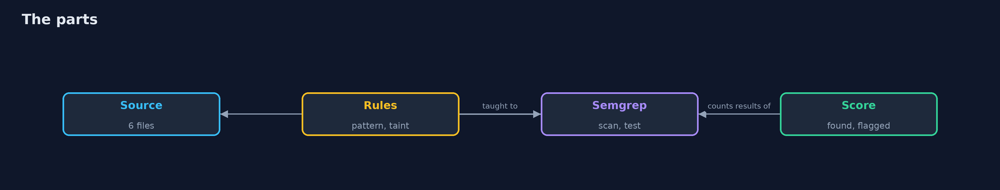
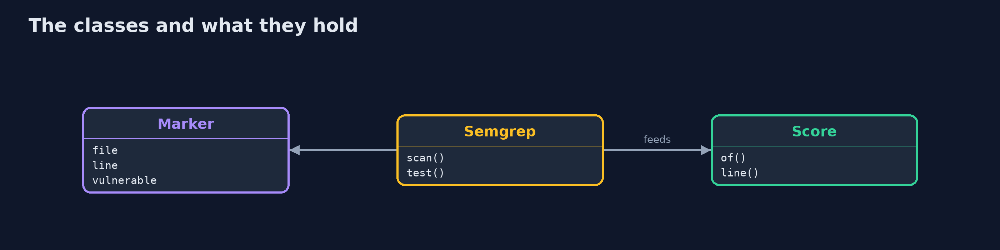
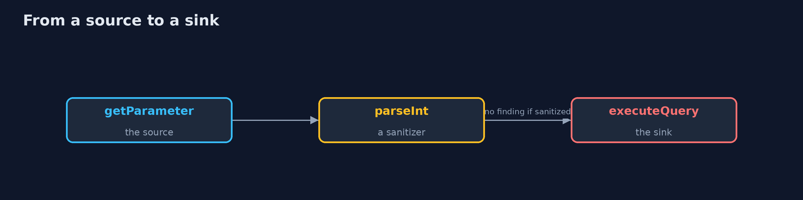
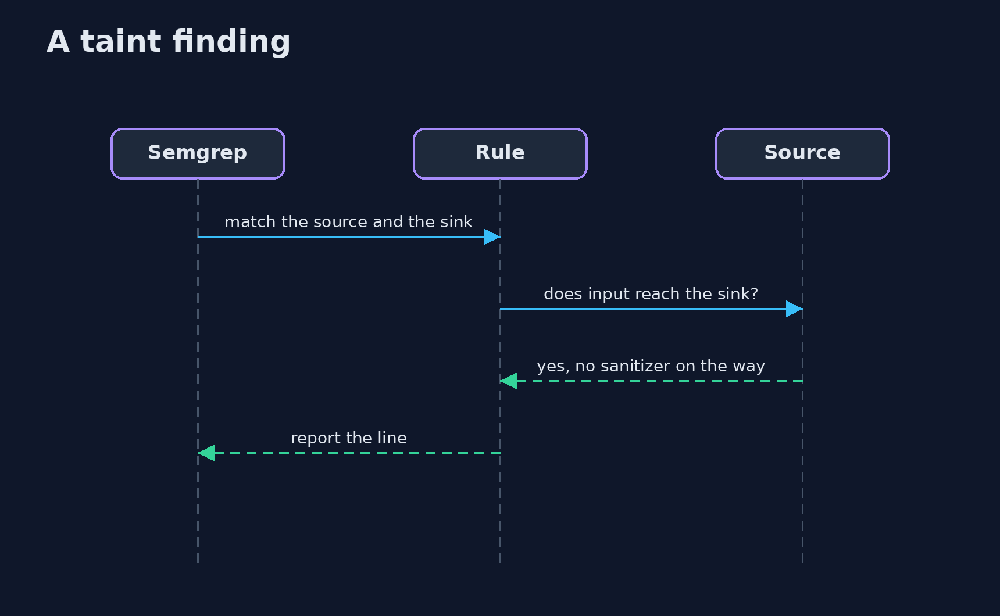

Static Analysis
src/main/java/com/jk/explore/security/sast/
├── Finding.java One result of a scan: the rule, the file name and the line
├── Marker.java The truth about a line of the code under test, written in a comment: {@code // VULN sql-direct} or {@code // SAFE sql-prepared}
├── SastDemo.java
├── Score.java What a rule set got right on the lines the code under test marks, for the markers whose id starts with a prefix
├── Semgrep.java The real Semgrep command line, run with rules from files, no account and no metrics
├── Sh.java Runs a program and returns what it printed, whether it worked or not
├── Suppressions.java The comments that switch a rule off for a line
└── Venv.java A Python virtual environment under build/ with Semgrep installed with pip the first time
A bank's web code holds 7 planted flaws and 7 safe look-alikes, marked in comments; on the SQL queries a pattern rule finds 4 of 4 flaws and flags 3 of 4 safe lines, while a taint rule that follows input from the request to the query finds 3 of 4 and flags 1 of 4 and misses the flaw whose query is built in another file; the taint rules with a weak-hash rule find 6 of 7 flaws; Semgrep's own rule tests pass 4 of 4 checks, and the same tests catch a rule with its sanitizer removed (3 of 4); a false alarm is suppressed with a comment that names the rule, the reason and the owner, and a build check refuses a suppression without them.
Static analysis reads the code without running it. A pattern rule looks for a shape such as a query built with +; a taint rule follows input from where it enters (a request parameter) to where it hurts (a query), and does not report it when a check lies in between. This project plants 7 flaws and 7 safe look-alikes in a small bank web application (each marked with a comment), writes the rules in Semgrep's YAML, and counts what each rule gets right. A Java program drives the real semgrep (installed with pip into build/ the first time; python3 and a network once); the demo is tagged integration: ./gradlew integrationTest.
What it shows:
- Pattern against taint. On the SQL, the pattern rule finds 4 of 4 flaws and flags 3 of 4 safe lines; the taint rule finds 3 of 4 and flags 1 of 4.
- What a taint rule cannot see. The flaw whose query is built in another file is missed, because the input and the query are never in one method.
- Tests for the rules. semgrep --test passes 4 of 4 checks; a rule with its sanitizer removed passes only 3 of 4: the test catches it.
- Triage. A false alarm is suppressed with a comment that says why and who owns it; a build check fails a suppression without both.
- The bill. A rule is code: it needs tests, owners and an honest list of what it cannot see.
Maps to: OWASP Top 10 A03 Injection · OWASP ASVS V5 · NIST SSDF PW.7 · CWE-89, CWE-78, CWE-22, CWE-328.
The idea in everyday terms
A proofreader with two methods. One circles every sentence with a certain shape. The other follows a claim from the place it is made to the place a reader relies on it, and stays quiet if someone checked it on the way. The second is quieter, but it only follows what is on the same page.
The scenario
A bank's web application builds queries, runs a converter and reads files. Some of that code uses request input unsafely, some looks the same and is safe. The demo writes rules and counts what they find.
Run
./gradlew run
The demo tells the story in 5 acts, each printing exact numbers that the tests check:
| Act | What it shows |
|---|---|
| 1. The code under test | Six files hold 7 planted flaws and 7 safe look-alikes, each marked in a comment. |
| 2. Pattern against taint | On the SQL the pattern rule finds 4 of 4 and flags 3 of 4 safe lines; the taint rule finds 3 of 4 and flags 1 of 4. |
| 3. Tests for the rules | semgrep --test passes 4 of 4 checks, and a rule with its sanitizer removed passes only 3 of 4. |
| 4. Triage | A false alarm is suppressed with a reason and an owner, and a build check refuses a suppression without them. |
| 5. The bill | A taint rule follows input inside a method; the sink in another file is missed. |
Test
./gradlew test
11 tests in DemoRunsTest, MarkerAndSuppressionsTest, ScoreTest. The scoring, the markers and the suppression check are tested with no tools. The demo runs Semgrep (./gradlew integrationTest).
What the simulation got right, and what it left out
Semgrep is real and runs offline with the rule files in this project. The code under test is a small made-up bank application that is never compiled or run. The demo prints counts and rule names, never paths.
Technologies and versions
Every version below is pinned in the project's build files and was the latest stable release when the project was built.
| Technology | Version | Used for |
|---|---|---|
| Java | 25 | the language and runtime; a Gradle toolchain finds or downloads the JDK |
| Gradle | 9.8.1 (wrapper) | build and run; nothing to install, the wrapper downloads it |
| tools.jackson.core:jackson-databind | 3.1.5 | library the code uses |
| org.junit.jupiter:junit-jupiter | 6.1.3, set by junit-bom | JUnit 5: the tests (tests only) |
| org.junit.platform:junit-platform-launcher | 6.1.3, set by junit-bom | JUnit platform launcher, which Gradle needs to run the tests (tests only) |
| videokit | repository tool (tools/videokit) |
the narrated video and animation: Piper en_US-amy-medium, speed 0.8, longer pauses (the amy-slow voice) |
Learning Material
| Document | What it is for |
|---|---|
| Problem statement | the situation and what the project must show |
| Prerequisites | what you need to know first |
| Static Analysis, explained | the acts in prose |
| Session guide | a one-hour lesson with exercises |
| Animated walkthrough | the acts step by step, narrated |
| Threat model | what is protected, who could harm it, and how, using STRIDE |
| Spec | what this project must be true of |
| Expected output | the golden demo output every test and every port checks against |
The idea in one picture
Rules read the source; markers say what is true.

Where each piece sits
The truth, the scanner and the score.

How the data moves
A taint rule follows the data.

Who calls whom, in order

Video
video/sast-explained.mp4 (with .m4a audio and .srt subtitles) is built by video/build_video.sh. Rendered media is not committed.
What it costs
- Rules need tests, or nobody knows what they miss.
- A taint rule sees one method at a time in the open source engine.
- False alarms cost reviewers' time, and suppressions can hide real flaws.
- A rule only knows its own sources, sinks and sanitizers.
- Findings are not fixes; a person decides each one.
When this is too much
A small team can start with the maintained rule sets and no custom rules. Write your own when the code has its own frameworks, sources and sanitizers that the shared rules do not know.
Where you have already met this
- A scanner report with a thousand findings and no owner.
- A grep for "executeQuery" in a build step.
- A suppression comment with no reason.
- A rule pack that nobody has tested.
Where this sits
This is a project of the devsecops-pipelines module, with secret-scanning. The flaws are the ones found at runtime in the intermediate track; here they are found in the source.